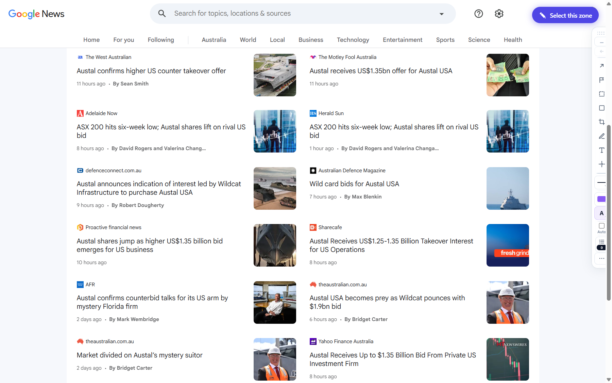

Welcome & Quick Start
Sagitnote is a browser extension that lets you highlight text, draw, and leave notes directly on any web page — then keep, search, sync, and share everything you've annotated.
What is Sagitnote?
Sagitnote adds an annotation layer on top of the web pages you already read. Everything works in place: you never have to leave the page to mark it up.
- Text highlights — mark any sentence in six colors, with fill, border, underline, wavy, or text-color styles, and attach a note.
- Drawing tools — arrows, rectangle frames, freehand lines, flags, and text notes pinned anywhere on the page.
- Screenshots — capture the whole page or a region as an image annotation.
- Element marks — bookmark a whole element such as a button, image, or link.
- Annotation Manager — every annotation is collected into a single library with folders, search, editing, and export.
- Cloud sync & sharing — keep annotations in sync across devices and share them with others (the free plan is subject to daily creation caps).
Install the extension
-
Install the extension
Recommended: one-click install from the official store — the Chrome Web Store or Edge Add-ons. Updates are applied automatically. You can also start from the install buttons on the Sagitnote homepage.
You can also load the direct-install package manually: download the Sagitnote package (.zip) and unzip it into a folder you keep long-term. Then open
chrome://extensions(Edge:edge://extensions), turn on Developer mode, click Load unpacked, and select the unzipped folder. -
Pin it to the toolbar
Click the puzzle-piece icon in the browser toolbar and pin Sagitnote so it is always one click away.
-
Open any web page
Visit any page you want to annotate. The floating control panel appears on the page — that is Sagitnote's toolbox. You can drag it anywhere, or minimize it when you don't need it.
-
Sign in (recommended, but optional)
You can start annotating right away without an account — everything is saved on this device (local mode). Cloud sync, sharing, and snapshots do need an account: registration is free (just an email verification code), and after signing in once your account stays in this browser and works offline too.
Sagitnote works on ordinary web pages and on local files opened in the browser. It does not run on the browser's own pages, such as the New Tab page.
Your first annotation
The quickest way to see Sagitnote in action: highlight a sentence and attach a note to it.
-
Select some text
Drag to select any sentence on the page, just as you would to copy it.
-
Pick a color
A small color bar appears next to the selection. Click a color dot and the highlight is applied instantly. To use a different highlight style (fill, underline, wavy…), pick it in the panel's style group first, then select your text.
-
Add a note
Right after highlighting, click the lit-up pen button in the bar to write a note and add tags — you can choose whether the note appears on hover or is always visible. To edit it later, click the highlight itself, or open Browse (the count button) and click the annotation's edit (pencil). Your note stays attached to that sentence.

Turn on Auto in the control panel and every text selection is highlighted automatically with your current color — handy when you are marking up a long article.
The floating control panel
The control panel is Sagitnote's toolbox. It sits on top of the page and contains everything you need:
- Tool buttons — arrow, flag, rectangle frame, image rectangle, page screenshot, freehand line, text note, and element mark.
- Style controls — line width, color, and style for the active tool.
- Browse — open the list of annotations on the current page.
- Popups toggle — close every open annotation popup on the page at once.
- More (⋯) — page note, favorites, import/export, the Annotation Manager, snapshots, sharing, settings, and help.
Drag the panel's handle to move it, or minimize it while reading. See Annotation Tools for a tour of every tool.
Pages with embedded frames
Some pages embed other documents inside them (iframes). On those pages Sagitnote asks which area you want to annotate: a “✎ Select this zone” pill appears in the center of each eligible area. Click the pill on the area you want — for most pages the main article is the right choice.

Where your data lives
- Local first — annotations are saved in this browser first, no network required; they keep working offline. You can annotate without signing in (local mode); once you sign in, your data is also backed up to your account.
- Cloud sync — after signing in, press Sync now or let auto-sync run: annotations are backed up and kept consistent across devices (available on both Free and Pro).
- Export anytime — export the current page or your whole library as a file backup from the More menu or the Annotation Manager.